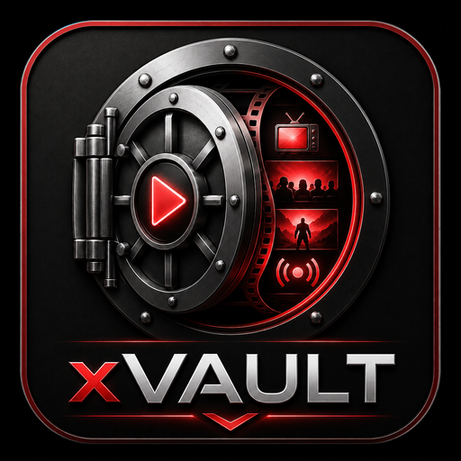

Kodi Video-Add-on
xVAULT
Filme, TV-Serien und LiveTV in Kodi durchsuchen und wiedergeben.
Aktuelle Version
2026.10.28.1
Installations-ZIP herunterladen
ZIP-Datei · 12,8 MB
| Name | Last modified | Size | |
|---|---|---|---|
| [PARENTDIR] | Parent Directory | - | - |
| [DIR] | plugin.video.xvault/ | 28.Oct.2026 06:25:35 | - |
| [DIR] | repository.xvault/ | 26.Oct.2026 16:49:34 | - |
| [FILE] | addons.xml | 28.Oct.2026 06:26:54 | 4.60 KB |
| [FILE] | addons.xml.md5 | 28.Oct.2026 06:26:54 | 32.00 B |
| [FILE] | repository.xvault.zip | 28.Oct.2026 06:26:54 | 330.06 KB |
| [FILE] | repository.xvault-1.0.3.zip | 28.Oct.2026 06:26:54 | 330.06 KB |

Kodi Video-Add-on
Filme, TV-Serien und LiveTV in Kodi durchsuchen und wiedergeben.
ZIP-Datei · 12,8 MB
Kodi Repository
xVAULT legt beim ersten Start automatisch das Repository repository.xvault an. Für eine manuelle Einrichtung kann das Repository-ZIP über einen festen Direktlink installiert werden.
Kompatibilität
xVAULT 2026.10.11.1 wurde am 11.10.2026 mit Kodi 22.0-RC1 (Piers) im lokalen Windows-Kodi-Profil getestet. Die wichtigsten Bereiche inklusive Filme, Serien, Suche, LiveTV, LiveTV lite und MoFlix-Quellen-Ermittlung wurden erfolgreich geprüft.
Testmatrix und Ergebnisse öffnenNightly 2026.10.29.3
Neuer xVAULT-Radio-Schriftzug mit Neonakzent in allen sieben Visuals. Zusätzlich zum Windows-Build gibt es jetzt einen optimierten Fire-OS-/Android-ARM32-Build für Kodi 21. Passende Pakete werden automatisch nachgeladen; Radio bleibt auf anderen Systemen ohne diese Visualisierung nutzbar. Außerdem: korrigiertes Suchzeitlimit und robustere Sync-Anmeldung und Statusanzeige. Die Filmidentitätsprüfung, begrenzten OHA-Abfragen und der Radio-Schalter aus 2026.10.29.2 sind weiterhin enthalten. Der stabile Release bleibt 2026.10.28.1.
Nightly 2026.10.29.3 herunterladenxVAULT-Visuals 22.0.2 für Kodi 22 / Windows 64 Bit · xVAULT-Visuals 21.0.2 für Kodi 21 / Android ARM32
Neu in 2026.10.28.1
Neu in 2026.10.26.1
Neu in 2026.10.24.1
Neu in 2026.10.23.1
Neu in 2026.10.22.1
Wissensdatenbank
Das Handbuch beschreibt Installation, Hauptmenü, Suche, Quellen, Wiedergabe, Synchronisation, Trakt, LiveTV, Downloads, Untertitel, Werkzeuge, Einstellungen und Fehlerhilfe.
Handbuch öffnenFeedback
Fehler gefunden oder eine Idee für xVAULT? Nutze GitHub Issues, um Fehler zu melden oder Verbesserungen vorzuschlagen.
GitHub Issues öffnenHerkunft und Dank
xVAULT ist eine Weiterentwicklung von xShip.
Mit xVAULT führen wir den Gedanken von xShip weiter und bauen auf einer Grundlage auf, die über viele Jahre mit großem Einsatz, Können und Leidenschaft geschaffen wurde.
Unser ausdrücklicher Dank gilt dem ursprünglichen Team xShip, insbesondere den öffentlich bekannten Mitwirkenden aus dem xShip-Umfeld, für ihre langjährige Arbeit und ihr Engagement.
xShip war für viele Nutzer ein vertrautes und geschätztes Projekt. Die geleistete Arbeit verdient Anerkennung, Dank und Respekt — besonders für die Zeit, die Mühe und die technische Qualität bis zur Einstellung des Projekts.
Danke an das Team xShip.
Danke an mr-evil1 für den Scrapper.
Danke an michaz1988.
Danke für die Basis.
Danke für eure Arbeit.
xVAULT blickt nach vorn, ohne zu vergessen, worauf es aufbaut.
Die ZIP-Datei nicht vorher entpacken.
SHA-256
11C2432CAB59A5B655D6471C7AB561D386DEDB3717D3FB167D7DCA56DD3AA80C